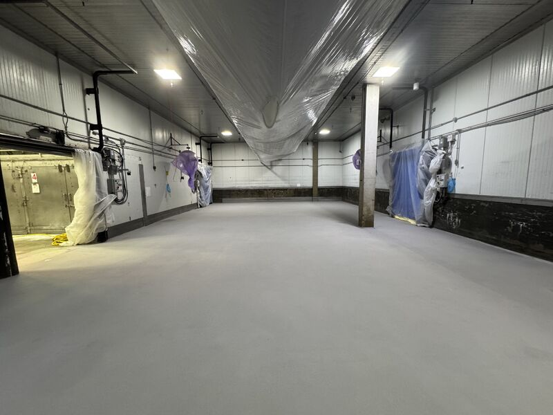
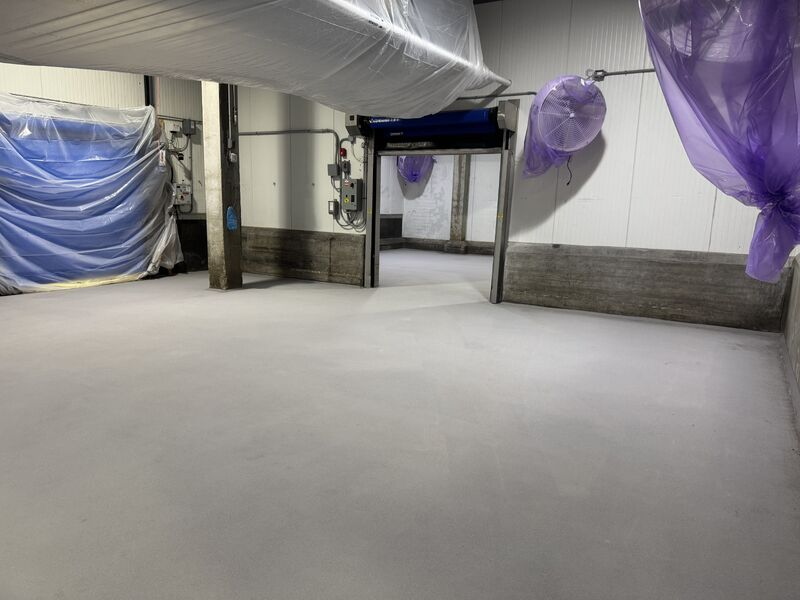
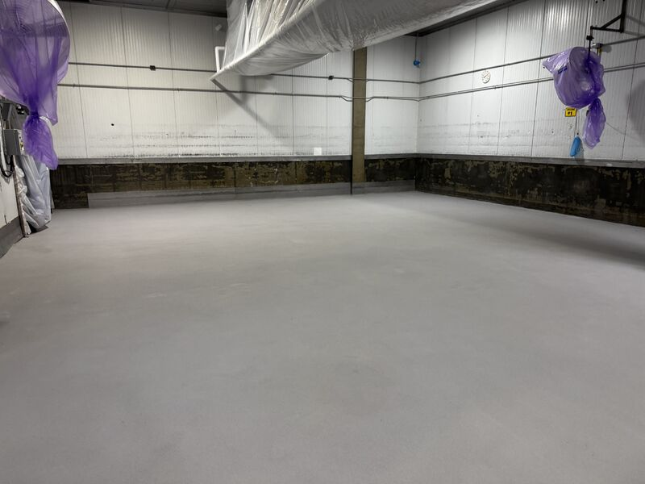
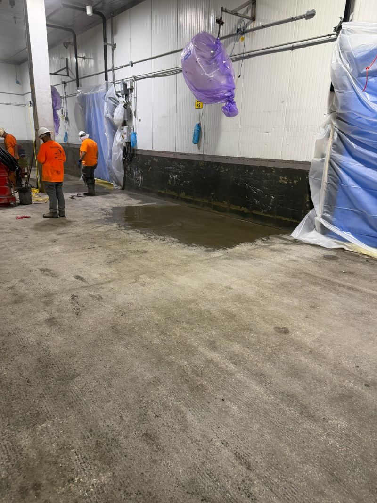

Full plant shutdown. Three days. Every area back on schedule. This was the second of two blast freezer and cooler floors we completed the same weekend for the same client, about 10 minutes apart.

The first building was the tougher of the two. This one still had its own list: re-slope the floor, deepfill where the slab had deteriorated, and install SaniCrete STX, a 3/8" stainless steel reinforced cementitious urethane, with cant cove throughout.
Bare Concrete Is Still a Schedule
Bare concrete does not mean simple. In a blast freezer or cooler, the floor has to handle traffic, washdown, thermal cycling, and the production schedule waiting on the other side of the shutdown. If drainage is wrong or deteriorated concrete gets covered without being rebuilt, the plant inherits that problem later.
That is why the re-slope and deepfill work mattered before the STX went down. The floor system is only as useful as the details under it and around it.



Late Is Not an Option
Production schedules do not move because a floor contractor needs more time. Every minute late is missed money for the plant. That is the pressure on freezer shutdown work, especially when more than one room is running at the same time.
The practical answer is planning the work in the order the floor actually needs: prep, slope, deepfill, profile, install, clean broadcast, and finish the cove details. No guessing. No pretending damaged concrete will take care of itself.
Got a Freezer Floor Waiting?
If a freezer floor keeps getting pushed to next year, we can help plan the shutdown window, repair scope, and STX system around the plant schedule.